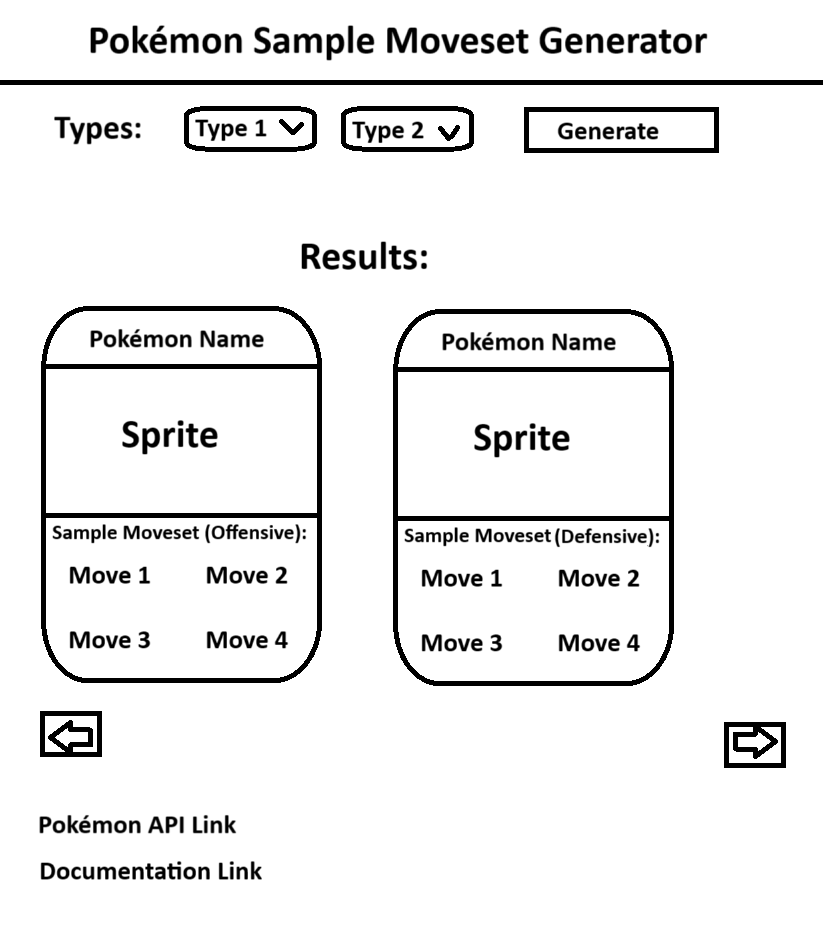

IGME-235 Project 2 Documentation
Goal
My plan is to use the Pokemon API to make a website that searches
for Pokemon based on types selected by the user and also provides a sample move set for it to use.
The target audience for this project is casual players who just want to have a solid move set for their Pokemon.
If I end up having enough time, I will improve my algorithm to select the moves based on the specific game.
Notes
-
I will be assuming that the Pokemon is being used in a 1v1 format (so as to avoid more complicated logic).
-
The move set type will be determined by the chosen Pokemon's stats. For example:
If the Pokemon has Attack and Special Attack as its highest stats an offensive move set will be created.
-
Use the stats property to campare and see what type of moveset this Pokemon should use
-
Moveset Types
-
Main Damage Dealers (Offensive): Chosen if attack or special attack is the dominant stat.
They have two offensive moves that match their typing, one move to counter
types they are weak to and another move for stat buffs
Basic Sketch

Resources
Pokemon API Documentation Link